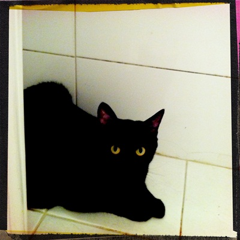

엊그제 간장이 밤새 널어둔 티셔츠에 구멍을 냈다.
연일 고된 노동에 심신이 피로하던 터라
너는 사료도 먹지 말라며 호통쳤다.
샤워를 하고 나왔더니 간장은
그때까지 사료 근처에도 가지 않은 채
서랍장 위에 웅크리고 앉아 억울한 눈빛으로
나를 빤히 쳐다보고 있었다.
직장이 집에서 멀고 할 일이 차고 넘치는 터라
근래 집을 비우는 일이 잦다.
아무리 형제가 함께라지만
본래 예민함이 유전자에 각인된 족속들이라
나름 스트레스를 받고 있었을텐데
무심하고 뻔뻔한 짓을 한 것 같아 미안했다.
"옷보다 네가 좋아. 이제 사료 먹어도 돼."
혼잣말처럼 속삭였더니,
"야옹-"
원망인지 수긍인지 모를 대답을 남기고
사뿐히 내려와 아작아작 사료를 먹는 것이었다.
속내를 말로 표현할 줄 아는 사람과도 잘 지내지 못했는데
고양이는 오죽할까 싶어 애잔하고 미안했다.
자격 없는 집사를 견뎌줘서 고마워...
미안해.